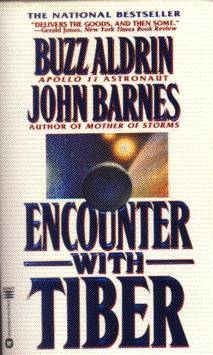

Encounter with Tiberby Buzz Aldrin and John Barnes
publisher: Warner Books
Fiction, 640 pages | 
(book cover art, Copyright ©1996 Don Puckey and Bob Eggleton)
Used with Permission. |
Return to the Book MenuPrevious|Next
Description:
An epic story of humanity's first contact with a race from
a nearby star that came and visited us once, themselves. A tale
of the the near future, the distant past, and perhaps our distant future,
as well.
Recommended for: Fiction lovers, space buffs, people
who like to imagine.
Did-you-read questions:
Deadline: February 1, 2005.
These should be easy questions, but you should have the questions ready and keep an eye out during your reading. Each question should be answered with 1-2 sentences.
Note: these questions are not probably not the most important part of the book! Your essay will not have to cover these questions!
- Who or what is Skygrazer?
- What does ZPE stand for?
- What are the two main kinds of Tiberians?
- Why did the Tiberians come to Earth?
- Who are the Real People?
Report Questions:Deadline: Peer Review Session on February 8, 2005; paper due February 10, 2005.
You should write a 3 - 4 page essay on one of the following questions. Your essay should include examples and references to the book, unless otherwise specified. Page number references are sufficient for citing material from the primary book. If you use outside materials, cite your sources in full. If you would rather write on a different topic, you may, but clear it with Mr. Howe or Ms. Sullivan first.
- In what ways are the Tiberians like humans? In what ways are they different?
Go into more detail than just "They have two legs, but they'e covered
in fur." How do the two civilizations compare and contrast? How are they
biologically similar?
- Towards the end of the book, there are a number of events which you might
have noticed sounded a little similar to stories from religion, particularly
Christianity. What events of this sort did you notice, and what do you
think of them?
- Race and slavery are recurring issues in this novel. How do the events
in this novel compare or contrast with human history? (With human present?)
- Buzz Aldrin was the second man ever to step on the surface of the moon,
so he is quite knowledgeable about space flight. What do you think of his
vision of the future of manned space flight? What feels particularly realistic
or unrealistic about it?
Graphic and Presentation:
Deadline: February 21 - March 3, 2005.You will give a 10 minute presentation on both of the following:
- Convince your peers that they should (or should not) read this book. (This may include a brief summary of the book.) Give examples of what was cool or worthwhile in the book, and what you got out of it (or didn't).
- Describe a (realistic) science idea that you learned about in this book, citing information from at least 2 external sources (other than the dictionary). If you would like help choosing or understanding an idea from your book, you are invited to come talk to Mr. Howe or Ms. Sullivan.
Note: This presentation should not be just a reading of your paper!Along with this presentation, you should have a graphic that will go with it. A Power Point presentation is recommended, but if you have a special idea for a something else, such as a model, an original video presentation, or a well done drawing/ painting/ sculpture/ etc., you may do so, provided it involves a similar level of effort and polish. Speak to Mr. Howe or Ms. Sullivan first if you are considering an alternate graphic format to the Power Point.
Return to the Book MenuPrevious|Next